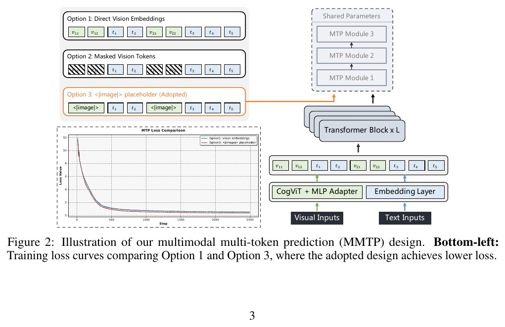
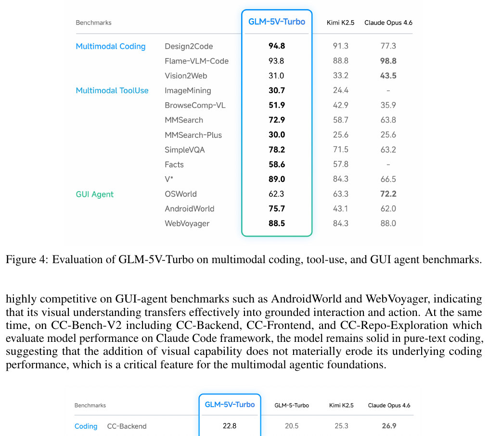
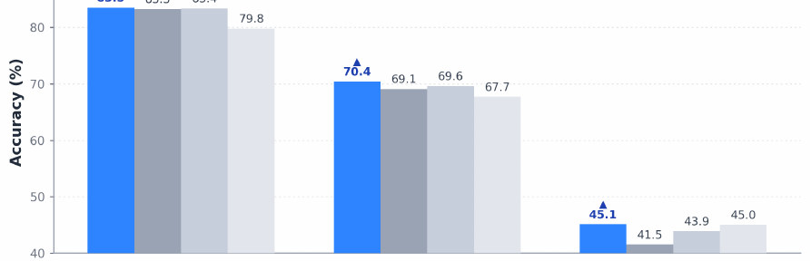

速览
五条要点
目标是「原生多模态 Agent 基座」，不是给 LLM 外挂视觉
感知被当成推理、规划、工具调用和执行的一部分摘要 · §1。实际落地是 GLM-5-Turbo 底座 + CogViT + MLP adapter图 2，并接入 Claude Code、AutoClaw、OpenClaw 等框架§3.2 · §3.5。
两处结构改动：CogViT 和 <|image|> 版 MTP
CogViT 第一阶段让学生 ViT 在 SigLIP2（语义）与 DINOv3（纹理）两个特征空间里重建被遮住的区域，遮挡率 35%§2.1。MMTP 比较了三种做法，选了「保留位置、视觉 token 全换成共享占位符」这一种：0.5B 消融里 loss 更低、收敛更稳，也不用跨流水线阶段传视觉 embedding§2.2。
30+ 类任务联合 RL，作者说几乎所有能力都在涨
相对 SFT：RefCOCO-avg +4.8%、MVBench +5.6%、SUNRGBD +7.7%、CharXiv +7.7%、OSWorld +4.9%、CC-Backend +0.2%§2.3。代价也写了：RL 没覆盖到的能力，后训练后可能下降§2.3。
多模态编码与搜索领先，GUI 和端到端建站不占优
Design2Code 94.8、MMSearch 72.9、BrowseComp-VL 51.9，表内最高；OSWorld 62.3 低于 Kimi K2.5 的 63.3 和 Opus 4.6 的 72.2；Vision2Web 31.0 是三家里最低的图 4 · 读图。
数据配比只给了 CogViT 一段，评测设置基本没写
多模态预训练只列了 10 类数据名，SFT / RL 的数据量和比例都没有；对比模型的分数是自测还是引用、开不开工具、跑几次，原文都没说。见 §09。
架构：CogViT + MLP Adapter + GLM-5-Turbo + MMTP
原文没有单独的整体架构图，图 2 是 MMTP 设计图，其中右半部分顺带画出了整体结构（视觉输入 → CogViT + MLP Adapter，文本 → Embedding → Transformer Block × L → 共享参数的 MTP 模块）。

<|image|> token 代替所有视觉 token（采用）。右侧：视觉输入经 CogViT + MLP Adapter、文本经 Embedding Layer，拼成序列进入 Transformer Block × L，之后接 MTP Module 1–3（共享参数）。左下：方案 ① 与 ③ 的 MTP 训练 loss 曲线，③ 更低。来源：论文图 2（p.3）| 改动 | 做法 | 原文给的证据 |
|---|---|---|
| CogViT 第一阶段 | 蒸馏式 MIM：学生 ViT 在 SigLIP2（语义）与 DINOv3（纹理）的特征空间里重建被遮区域；遮挡率 35%、224×224；Muon + cosine decay；加 QK-Norm 防 logit 爆炸§2.1 | 图 1 柱状图（本地裁图缺图例与基准名，见 §06）；无「单教师 vs 双教师」消融 |
| CogViT 第二阶段 | 对比式图文预训练：分辨率换成 NaFlex（变尺寸、保持原始宽高比）；sigmoid SigLIP loss，global batch 扩到 64K，双向分布式实现；8B 中英双语图文语料；Muon，vision / text / projection 三部分各自的学习率与衰减§2.1 | 同上；具体学习率未给 |
| MMTP | MTP 头的视觉输入换成共享 <|image|>，保留位置信息§2.2 | 0.5B 模型消融：比方案 ① loss 更低、收敛更稳（图 2 左下曲线）；方案 ② 只有工程论证，无曲线 |
| 语言底座 | GLM-5-Turbo；正文以它作为纯文本对照§1 · §5 | CC-Backend 22.8 vs 20.5（读图，见 §06.3） |
数据：只有 CogViT 给了配比，其余给的是「类别 + 构造约束」
本文没有数据章节，数据信息散在 §2.1、§2.3、§3.3、§4（Lens 1–3）和 §6。下面按阶段收拢；凡是没有数字的，明确标「原文未披露」。
4.1 CogViT 预训练数据
阶段 1：蒸馏式 MIM 有配比
固定 224×224、遮挡率 35%。总图像数、去重与质量打分方式 原文未披露。
阶段 2：对比式图文预训练 只有规模
- 语料
- 8B 中英双语图文（「8-billion bilingual image-text corpus」）§2.1
- 目的
- 增强跨语言理解
- batch
- global 64K§2.1
- 中英比例
- 原文未披露
- 清洗 / 过滤
- 原文未披露
4.2 多模态预训练：10 类数据，重点是多模态编码
预训练用纯文本 + 多模态混合数据，「从预训练阶段就深度融合视觉和语言」§2.3。多模态部分列了以下类别，没有任何比例或 token 数：
- 多模态编码数据被特别强调，目的是把视觉理解和代码生成对齐，从而提升多模态 Agent 任务§2.3。
- 学科图像 ↔ SVG 配对数据加进预训练后，对下游 STEM 解题有正面作用（只有定性描述）§4 Lens 1。
4.3 SFT / Agent 数据：critic 数据与分层任务
GUI 感知 critic 数据 无规模
GUI-agent 指令微调里加入一部分 critic 数据，专挑推理过程中的错误：看错界面细节、认错目标元素、下一步动作判断错误。作者称这能提升模型对 GUI 细节的观察、减少几类反复出现的感知失败§4 Lens 1。
冷启动轨迹 无规模
Agent 训练仍依赖人工构造或强过滤的冷启动轨迹，这会收窄后续 RL 的探索空间；加大冷启动阶段的轨迹多样性能部分缓解，让 RL 更容易找到附近的更优变体§6。多样性如何度量 原文未披露。
理由：低层任务在同样资源下更容易构造、标注和验证；低层能力不够时只推高层任务往往不涨、还让训练更不稳§4 Lens 2。各层数据量与比例 原文未披露。
4.4 视觉深搜数据（ImageMining 能力的训练数据）
为了让模型具备 ImageMining 测的能力，作者搭了一条多阶段自动化数据管线§3.3：
知识发现
约束「Visual Jump」（WEB_VISUAL）：中间推理跳转必须经过视觉环节，逼模型真去解析图像，而不是走文本捷径或参数知识§3.3
QA 重构
把发现链改写成问答；具体规则 原文未披露
质量过滤
过滤标准与通过率 原文未披露
OCR Search 专项
图表、地图、海报：要求先做实体隔离与局部裁剪，再发起搜索链§3.3
4.5 RL 数据：30+ 类任务、按来源打标签
- 覆盖感知、推理、Agent 三大块，超过 30 类任务§2.3；具体任务清单与每类样本量 原文未披露。
- 每个样本带 data-source 标签，reward、pass@k 等指标可按来源跨并行组聚合、分别上报§2.4。
- 奖励由独立的 reward 系统统一调度多个 verifier：规则 verifier 本地同步执行，模型判官经 API 异步调用，再按可配置的聚合策略合成奖励§2.4。判官用的是哪个模型 原文未披露。
4.6 已披露规模一览
| 数据 | 已披露 | 未披露 |
|---|---|---|
| CogViT 阶段 1 | 80% 自然图 / 10% 指令 / 10% 科学图像；224×224；遮挡 35%§2.1 | 总量、过滤 |
| CogViT 阶段 2 | 8B 中英双语图文；batch 64K§2.1 | 中英比例、过滤 |
| 多模态预训练 | 10 类数据名；强调编码；含图像-SVG 配对§2.3 · §4 | token 总量、文本 / 多模态比、各类比例 |
| SFT | 含 GUI critic 子集、四级 GUI 任务层级§4 | 条数、配比、来源 |
| RL | 30+ 类任务；规则 + 模型 verifier§2.3 · §2.4 | 任务清单、样本量、步数 |
| ImageMining（评测） | 217 题；7 领域；5 类推理；源自人工收集的 trace§3.3 | 各领域题数、标注流程 |
训练配方
只有 CogViT 的两阶段给了较具体的设置；LLM 侧的预训练阶段划分、token 数、学习率、RL 算法超参都没写。
CogViT 蒸馏 MIM
- 教师
- SigLIP2 + DINOv3
- 遮挡
- 35%
- 分辨率
- 224²
Muon、cosine decay、QK-Norm§2.1
CogViT 对比预训练
- loss
- sigmoid SigLIP
- batch
- 64K
- 数据
- 8B 双语
NaFlex 变分辨率；分模块学习率§2.1
多模态预训练
- 数据
- 文本 + 10 类多模态
- 规模
- 未披露
从此阶段起视觉-语言深度融合§2.3
SFT
- 特色
- GUI critic 数据
- 结构
- 四级任务层级
冷启动轨迹人工构造 / 强过滤§4 · §6
联合多任务 RL
- 任务
- 30+ 类
- 技巧
- RVPO（UI-to-code）
作者把 on-policy 蒸馏也归入「多任务协同 RL」§2.3
RVPO 即原文的「relative visual policy optimization」，引自 UI2CodeN[45]，只说在 UI-to-code 任务上采用，本文没展开§2.3。on-policy 蒸馏只在 §2.3 末尾提了一句，何时做、老师是谁 原文未披露。
5.1 联合 RL：RL 相对 SFT 的增益
原文写法是「improvements of 4.8%」这类百分号，没说明是绝对分差还是相对提升，本页照抄。「STEM 四项」= MMMU_Val、MMMU_Pro、MathVista、LogicVista，原文只给一个 +1.8%，未说是平均值§2.3。
作者给出的三条观察（均为定性）§2.3：
- 跨域干扰比 SFT 小：多个域可以一起稳定上涨；分布窄、单任务 RL 易震荡的域，联合训练反而更稳。
- 思维模式会迁移：一个域学到的推理行为有时能带到另一个域。
- 未覆盖的能力会掉：与训练分布越正交的能力越容易在后训练后下降，所以 RL 的任务覆盖范围本身决定泛化边界；可用语义 / 结构相关的代理任务补，比如单轮 UI-to-code 的 RL 能帮多轮编码。
5.2 多模态 RL 基础设施（§2.4）
统一任务与奖励抽象
VLM RL Gym 统一单步 / 多步任务接口；reward 系统独立于训练主路径，规则 verifier 同步、模型判官异步，可配置聚合；样本带 data-source 标签分来源统计§2.4。
全流水线解耦与重叠
rollout、reward、batch 构建、权重传输解耦；每个推理请求注册完成回调，完成即算 reward；参考模型参数常驻 CPU、用前异步预取；支持按完成数或时间阈值的两种 early-abort，被中止的 prompt 缓存复用§2.4。
多模态显存管理
ViT 与 projector 单独设计显存策略：定向重计算 + CPU offload，避免激活显存随图片数线性增长§2.4。
拓扑感知切分与负载均衡
CP / TP 切分前移到数据加载阶段，边界对齐下采样组，省掉跨 rank 的 patch 聚合；DP 组间均衡后用异步 all-to-all 精确分发；大 Python 对象移出 GPU 通信路径，GPU 通信缓冲约省 7 GB；rollout 变长序列按「序列长度 × ViT token 数」联合 bin-packing§2.4。
超参与配置：已披露 vs 未披露展开
| 环节 | 已披露 | 未披露 |
|---|---|---|
| CogViT V1 | 遮挡 35%、224×224、Muon、cosine decay、QK-Norm§2.1 | 学习率、步数、ViT 参数量 |
| CogViT V2 | NaFlex、SigLIP sigmoid loss、batch 64K、分模块 LR§2.1 | LR 数值、步数 |
| MMTP | 3 个 MTP 模块共享参数（读图）；0.5B 消融图 2 · §2.2 | MTP loss 权重、推理时是否用作投机解码 |
| 预训练 / SFT | 数据类别§2.3 | 阶段划分、token 数、上下文长度、LR |
| RL | 30+ 类任务、RVPO、early-abort 两种模式§2.3 · §2.4 | 算法（GRPO 与否）、group size、KL、步数、判官模型 |
评测
四类：多模态编码、多模态工具调用、GUI Agent、纯文本编码与 Claw§5。对比对象：Kimi K2.5、Claude Opus 4.6；纯文本部分另加 GLM-5-Turbo。原文没有数据表，主结果全在图 4 / 图 5；正文点到的数字标 §1，其余为 读图。
6.1 多模态编码 / 工具调用 / GUI（图 4）
| 基准 | GLM-5V-Turbo | Kimi K2.5 | Claude Opus 4.6 |
|---|---|---|---|
| 多模态编码 | |||
| Design2Code | 94.8§1 | 91.3 | 77.3 |
| Flame-VLM-Code | 93.8 | 88.8 | 98.8 |
| Vision2Web | 31.0 | 33.2 | 43.5 |
| 多模态工具调用 | |||
| ImageMining（自研） | 30.7§1 | 24.4 | – |
| BrowseComp-VL | 51.9§1 | 42.9 | 35.9 |
| MMSearch | 72.9§1 | 58.7 | 63.8 |
| MMSearch-Plus | 30.0§3.1 | 25.6 | 25.6 |
| SimpleVQA | 78.2§1 | 71.5 | 63.2 |
| Facts | 58.6 | 57.8 | – |
| V* | 89.0 | 84.3 | 66.5 |
| GUI Agent | |||
| OSWorld | 62.3§1 | 63.3 | 72.2 |
| AndroidWorld | 75.7§1 | 43.1 | 62.0 |
| WebVoyager | 88.5 | 84.3 | 88.0 |
全部数值读自图 4（figures/fig4.jpg）；上标 §1 / §3.1 表示正文同一数字可核对。「–」= 图中未给分。V* 的星号是基准名本身（V-Star），不是脚注。原文未说明对比模型分数来自自测还是官方报告，也未给工具 / 思考模式 / 采样次数等设置。

6.2 纯文本编码与 Claw（图 5，本地未裁图）
| 基准 | GLM-5V-Turbo | GLM-5-Turbo | Kimi K2.5 | Claude Opus 4.6 |
|---|---|---|---|---|
| CC-Backend | 22.8§1 | 20.5 | 25.3 | 26.9 |
| CC-Frontend | 68.4§1 | 图 5 未裁入本地，不转录 | ||
| CC-RepoExploration | 72.2§1 | 同上 | ||
| PinchBench | 87.0 / 80.7§1 | 同上 | ||
| ClawEval | 57.7 / 75.0§1 | 同上 | ||
| ZClawBench | 57.6§1 | 同上 | ||
CC-Backend 一行的其余三列读自 fig4.jpg 底部带出的图 5 第一行读图。正文称 GLM-5V-Turbo 在 CC-Backend / CC-Frontend / CC-RepoExploration 上「甚至超过」GLM-5-Turbo§1。PinchBench、ClawEval 的两个数字各代表什么（如不同指标或设置），正文没有解释。CC-Bench-V2 来自 GLM-5 报告 [49]，在 Claude Code 框架内评测§5。
6.3 CogViT 编码器对比（图 1）

ImageMining 基准细节展开
定位：「think with image, deep search with image」，要求主动挖掘图像，靠多步工具调用（如局部裁剪、放大细节以修正搜索 query）完成；表现与「图上工具」使用精度强相关§3.3。
- 规模：217 道，源自人工收集的 trace 样本§3.3。
- 7 个领域：Social、Entertainment、Products、Places、Rich Text、Nature、Science。
- 5 类推理：Universal Recognition（动植物与器物细粒度识别）、Spatio-Temporal Reasoning（基于视觉线索的地理推断）、Event Reasoning（新闻事件、产品发布）、Text-based Reasoning（论文、报告等富文本）、Visual Search（交叉检索特定艺术品或图像）。
- 结果：GLM-5V-Turbo 30.7、Kimi K2.5 24.4、Claude Opus 4.6 未报§1 · 图 4 读图。
新在哪
工具表（表 1）、官方 skills（表 2）、接入 Claude Code / AutoClaw 属于产品与生态工程，多任务 RL 的思路也延续自 GLM-4.1V-Thinking / GLM-4.5V§2.3。下面只列本文给了做法和可核对证据的点。
MMTP：MTP 头对图像只喂 <|image|> 占位符
系统比较了「直传视觉 embedding / 全 mask / 占位符」三种方案，选占位符：不用跨 PP 阶段传视觉 embedding，又与 SP / CP 切分天然兼容§2.2。
CogViT：SigLIP2 + DINOv3 双教师特征空间 MIM，再接 SigLIP 对比
先用两个教师分别提供语义和纹理目标，再用 NaFlex + 64K batch + 8B 双语图文做对比对齐§2.1。
面向多模态 RL 的拓扑感知切分
把 CP / TP 切分前移到数据加载并对齐下采样组，免去 patch 全量聚合；按序列长度 × ViT token 数联合 bin-packing§2.4。
ImageMining + 「Visual Jump」数据约束
评测要求在图上裁剪、放大后再搜索；训练数据管线强制中间跳转经过视觉环节，并专门构造图表 / 地图 / 海报的 OCR Search 数据§3.3。
30+ 类任务联合 RL 的逐基准增益
给出了 10 组「RL vs SFT」增益，并明确报告了副作用：RL 未覆盖的能力会退化§2.3。
对图像编辑数据 / 评测 / caption 的启示
这是理解侧 VLM，不生成图像。但它的编码器预训练、反文本捷径的数据约束、感知 critic 数据、分层任务和 Vision2Web 的验证协议，正对应编辑模型的数据构建、caption 质检和评测设计。每条先写论文怎么做，再给一条迁移建议（不是论文内容）。
D1语义目标和纹理目标分开给
论文：CogViT 的 MIM 同时对齐 SigLIP2（语义）和 DINOv3（纹理）两个特征空间§2.1。
迁移建议，不是论文内容：编辑数据的「非编辑区保持」筛选不要只用一种特征相似度。用 SigLIP 类特征判语义是否变了（如人物身份、物体类别），用 DINO 类特征或局部 patch 特征判纹理是否变了（如皮肤质感、布料纹理），两个分数分别设阈值，入库时都记下来。
D2源图池配比写成明确数字
论文：MIM 阶段直接写明 80% 高质量自然图 / 10% 指令数据 / 10% 科学图像§2.1。
迁移建议，不是论文内容：编辑数据版本说明里固定写「源图类别 × 占比」（人像 / 商品 / 场景 / 文字海报 / 合成图），每次改动报差值。评测出问题时，先查是不是某类源图被稀释了。
D3让样本必须「看图才能做」
论文：深搜数据要求中间推理跳转经过视觉环节（Visual Jump），防止模型靠文本捷径或参数知识答题§3.3。
迁移建议，不是论文内容：编辑指令里多放只能从图里确定的指代（「左数第二个杯子」「穿条纹衫的人」），少放「把天空变蓝」这类不看图也能做的指令。用纯文本 LLM 只读指令和 caption 预测编辑区域，预测对的样本降权，确保训练集里有足够多需要定位的指令。
D4先定位再操作的专项数据
论文：针对图表、地图、海报构造 OCR Search 数据，要求先做实体隔离和局部裁剪，再发起搜索§3.3。
迁移建议，不是论文内容：文字编辑、小物体编辑单独建子集：每条样本带目标区域框，质检时先裁出该区域放大对比 src / tgt，再看全图。小区域编辑在全图缩略图上看不出问题，局部验收要作为固定步骤。
D5结构化表示当「密集 caption」
论文：预训练加入学科图像 ↔ SVG 配对数据，对 STEM 有正面作用；前端 / SVG 编码迫使模型抓布局、相对位置和局部细节§4 Lens 1。
迁移建议，不是论文内容：海报、UI、图表类编辑，除自然语言指令外再存一份结构化描述（元素列表 + 框 + 文字内容 + 层级）。改字、挪位置这类编辑可以直接对比前后两份结构化描述做自动验收，比 VLM 打分更稳定。
C1按错误类型造 critic 数据
论文：GUI 指令微调加入 critic 数据，专挑「看错细节、认错目标、下一步判断错」三类错误，减少感知幻觉§4 Lens 1。
迁移建议，不是论文内容：caption 质检模型的训练数据按错误类型造负样本：改错对象（「红杯子」写成「蓝杯子」）、漏 op、多写图里没有的变化、位置说反。质检报告按这几类分别统计，而不是只给一个「合格 / 不合格」。
C2caption 也分层构造、分层验收
论文：GUI Agent 拆成元素感知 → grounding → 单步动作 → 轨迹四级，SFT 和 RL 都用；低层更易标注和验证§4 Lens 2。
迁移建议，不是论文内容：多 op 编辑 caption 按「对象清单 → 每个对象的框 → 单个 op 描述 → 完整指令」逐层生成，每层单独验收；低层（对象、框）错了就不往上走。这样出错时能定位到哪一层，也能复用低层标注。
C3冷启动指令要多样
论文：冷启动轨迹人工构造或强过滤会收窄 RL 的探索空间；加大轨迹多样性能让 RL 找到更好的变体§6。
迁移建议，不是论文内容：编辑 SFT 指令池不要只用一套 VLM 模板改写。同一编辑保留几种说法（口语 / 精确 / 模糊 / 中英混写），统计句式重复率；RL 前先看 SFT 模型对不同说法的输出是否一致。
E1任务规格要完整，功能和视觉分开度量
论文：Vision2Web 的任务规格不只有文字，还有 PRD、mockup、参考页、素材；评测用按依赖顺序执行的分步验证，并把交互中的功能正确性和隔离比较下的视觉一致性分开度量§4 Lens 3。
迁移建议，不是论文内容：编辑评测的每题规格 = 指令 + 编辑区 mask + （可选）参考图。打分拆成「指令完成度」和「非编辑区保持度」两个分数分开报，不先加权合成一个总分；多轮编辑按轮次逐步验证，前一轮不过就记录失败位置。
E2规则 verifier 和模型判官分层，样本带来源标签
论文：独立 reward 系统调度规则 verifier（同步）和模型判官（异步），按可配置策略聚合；每个样本带 data-source 标签，按来源分别报 reward 和 pass@k§2.4。
迁移建议，不是论文内容：编辑 RL 先过规则检查（尺寸、mask 外像素差、人脸数是否变化），不过就直接给低分，不调用 VLM 判官；通过的再交给判官。按任务类型（加物 / 删物 / 换背景 / 改字）分别看 reward 曲线，避免某类任务的 reward hacking 被平均值掩盖。
E3RL 期间监控没训到的能力
论文：RL 未覆盖、与训练分布越正交的能力，越可能在后训练后下降§2.3。
迁移建议，不是论文内容：编辑 RL 只训了几类任务时，留一个固定的「未覆盖能力」监控集（文字渲染、多人合影、风格化、超分辨率保真），每个 checkpoint 都跑。下降超过阈值就往 RL 任务池补相关的代理任务。
E4小规模自建集要报分组结果
论文：ImageMining 只有 217 题，覆盖 7 领域 × 5 类推理，但只报一个总分；该基准由作者自建，GLM-5V-Turbo 在上面领先§3.3 · 图 4。
迁移建议，不是论文内容：自建编辑评测集在两三百题量级时，按类别报分数、标出每类题数，并给 bootstrap 置信区间。自家模型参与建集时，说明建集时是否用过自家模型筛题。
局限与存疑
- 基础信息缺失。总参数、激活参数、上下文长度、视觉 token 预算都没写；权重是否开放、许可证也没说。正文能确认的公开物只有 ImageMining 基准、GLM-skills 和 ZClawBench 数据集链接§3.3 · §3.5 · 参考文献 [2]。
- 数据配比基本未披露。只有 CogViT 阶段 1 给了 80 / 10 / 10；多模态预训练只有类别名，SFT、critic 数据、RL 各任务的规模与比例都没有§2.1 · §2.3。
- 评测设置没写。没有数据表，主结果只在图 4 / 图 5；没说对比模型分数是自测还是引用、是否给了同样的工具链、思考模式、采样次数。ImageMining 和 Facts 上 Opus 4.6 为空图 4。
- 正文结论比图里的数字更乐观。§3.1 说在这些类别上「matching or exceeding」Kimi K2.5 和 Claude Opus 4.6，但图 4 中 Vision2Web（31.0 vs 33.2 / 43.5）、OSWorld（62.3 vs 63.3 / 72.2）、Flame-VLM-Code（93.8 vs 98.8）都落后；§5 讲 GUI 时只点名 AndroidWorld 和 WebVoyager§3.1 · §5 · 图 4 读图。
- Lens 3 的范例恰是短板。作者把 Vision2Web（自家基准）作为端到端任务设计的范例，但 GLM-5V-Turbo 在该基准上是三家最低§4 · 图 4 读图。
- 关键设计缺消融。MMTP 只有 0.5B 上方案 ① vs ③ 的 loss 曲线，方案 ② 无实验；CogViT 双教师、critic 数据、分层任务、轨迹多样性都只有定性描述§2.1 · §2.2 · §4 · §6。
- RL 增益的单位不清。「+4.8%」等没说明是绝对分还是相对百分比；STEM 四个基准合给一个 +1.8%；作者提到 RL 后有能力下降，但没给是哪些能力、降多少§2.3。
- 「近 8 倍」无法核对。MMSearch-Plus 30.0 被说成比 GLM-4.6V「nearly an eightfold improvement」，但全文没有 GLM-4.6V 的分数§3.1。
- 双数字指标无解释。PinchBench 87.0 / 80.7、ClawEval 57.7 / 75.0 各自含义正文未说明§1。
- 编校问题。§5 把 Design2Code 写成「Desing2Code」；MMSearch、OSWorld 在参考文献里各重复一次（[18]/[19]、[43]/[44]），正文混用；本地图 1 裁图缺图例，无法独立核对 CogViT 的比较结论。
图表索引
| 编号 | 内容 | 本页位置 |
|---|---|---|
| 图 1 | CogViT 与其他视觉编码器对比柱状图（figures/fig1.jpg，p.2；局部裁图，缺图例） | §06.3 |
| 图 2 | MMTP 三种方案、整体结构与 loss 曲线（figures/fig2.jpg，p.3） | §03 |
| 图 3 | 多模态深度研究报告与技术博客生成示例（未裁图） | — |
| 图 4 | 多模态编码 / 工具调用 / GUI Agent 评测（figures/fig4.jpg，p.11） | §06.1 |
| 图 5 | 纯文本编码与 Claw 评测（未单独裁图；CC-Backend 行见图 4 裁图底部） | §06.2 |
| 图 6–25 | 附录 Demo：股票分析、网页复刻、PRD 建站、UI 复刻、论文转网页 / PPT、图片素材收集、文档写作、多语 OCR、文档转写、视觉搜索、视频跟踪、grounding、3D 框、手指计数（未裁图） | — |
| 表 1 | 多模态工具分类：通用（识别、多模态搜索、浏览器、图像处理）、创作（网页、幻灯片）、深度研究；共列 28 个工具名推算，zai_ 前缀为专有 | — |
| 表 2 | 15 个官方 skills：Native 5、External Tool 5（含 Image Captioning、Prompt Generation）、Specialized 5（基于 GLM-OCR / GLM-Image） | — |
| 本页图 | 结构示意 SVG；RL 增益条形图（§2.3）；6 组基准条形图（图 4 读图） | §03 · §05 · §06 |